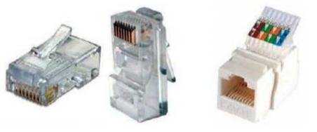
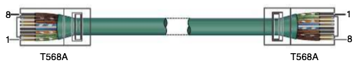
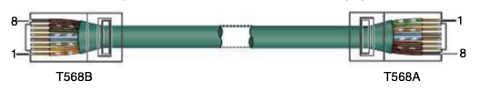

Par trenzado¶
El par trenzado es el medio guiado más utilizado en redes de área local: es el cable que conecta los ordenadores del aula al switch, el punto de acceso Wi‑Fi al armario de comunicaciones o el router de casa al televisor.
El cable lleva ocho hilos de cobre agrupados en cuatro pares, con cubierta exterior (habitualmente PVC, o LSZH en instalaciones que deben cumplir normativa contra incendios). Colores de pares (norma habitual):
- Par 1: azul / blanco‑azul
- Par 2: naranja / blanco‑naranja
- Par 3: verde / blanco‑verde
- Par 4: marrón / blanco‑marrón
¿Por qué se trenzan los hilos?¶
Esta es la idea clave del apartado y conviene entenderla bien.
Cada par transmite la señal en modo diferencial: el mismo dato viaja por los dos hilos del par, pero con polaridad invertida. En el extremo receptor, la tarjeta de red resta ambas señales y reconstruye el dato original.
¿Qué ocurre cuando aparece una interferencia (el motor de un ascensor, un fluorescente, un cable de corriente cercano)? Como los dos hilos del par están trenzados, van igual de expuestos al ruido, así que la interferencia afecta prácticamente por igual a ambos. Al restar las dos señales, ese ruido común se cancela.
Además, el trenzado reduce la diafonía (crosstalk): la interferencia que un par provoca sobre los pares vecinos del mismo cable. Por eso cada par se trenza con un paso distinto (más o menos vueltas por centímetro): así se evita que dos pares se acoplen entre sí a lo largo del recorrido.
Consecuencia práctica
Si al montar un conector destrenzas demasiado los pares, pierdes esa protección. La norma marca un máximo de 13 mm destrenzados en Cat. 6 (aún menos en categorías superiores). Es uno de los fallos más habituales al crimpar.
Qué hay dentro del cable¶
| Elemento | Detalle |
|---|---|
| Conductores | Cobre, normalmente AWG 23 a 26 (a menor número, hilo más grueso) |
| Aislante | Plástico de color que identifica cada hilo |
| Separador | Cruceta interior que separa los pares (habitual en Cat. 6 y superiores) |
| Pantalla | Opcional: lámina de aluminio (foil) o malla, según el blindaje |
| Cubierta | PVC o LSZH (baja emisión de humos y sin halógenos) |
Y una distinción muy importante en el día a día:
| Tipo de conductor | Cómo es | Dónde se usa |
|---|---|---|
| Rígido (solid) | Un único hilo de cobre por conductor | Tendido fijo por canaletas, de rack a roseta. Se conecta con herramienta de impacto, no se crimpa |
| Flexible (stranded) | Varios hilos finos trenzados por conductor | Latiguillos de PC a roseta o de panel a switch. Soporta dobleces y se crimpa en RJ‑45 |
Cuidado con el cable barato
Existe cable CCA (aluminio recubierto de cobre) mucho más barato. Tiene más resistencia, se calienta con PoE y se parte con facilidad. En una instalación seria se usa cobre puro.
Qué pares usa Ethernet¶
No todas las velocidades aprovechan el cable igual:
| Tecnología | Pares usados | Pines |
|---|---|---|
| 10BASE‑T / 100BASE‑TX (10 y 100 Mbps) | 2 pares (uno transmite, otro recibe) | 1, 2, 3 y 6 |
| 1000BASE‑T y superiores (1 Gbps o más) | Los 4 pares, bidireccionales a la vez | 1 a 8 |
Por qué importa
Un cable mal montado en el que solo funcionen los pines 1, 2, 3 y 6 parecerá que va bien: el PC conectará… pero a 100 Mbps en lugar de a 1 Gbps. Es una avería típica que se detecta mirando la velocidad de enlace.
Además, por esos mismos hilos puede viajar la alimentación eléctrica de los dispositivos mediante PoE (Power over Ethernet), que se usa para puntos de acceso Wi‑Fi, cámaras IP y teléfonos VoIP.
Categorías (visión práctica)¶
| Categoría | Ancho de banda (aprox.) | Uso típico |
|---|---|---|
| Cat. 5e | 100 MHz | Hasta 1 Gbps (instalaciones básicas) |
| Cat. 6 | 250 MHz | 1 Gbps a 100 m; 10 Gbps a distancias cortas |
| Cat. 6a | 500 MHz | 10 Gbps a 100 m |
| Cat. 8 | 2000 MHz | 25/40 Gbps a distancias cortas (centros de datos) |
Las Cat. 3–5 están obsoletas en instalaciones nuevas. En muchos centros educativos y oficinas se trabaja con Cat. 6 o 6a.
Dos matices que conviene añadir:
- La Cat. 8 solo alcanza sus velocidades en tramos muy cortos (unos 30 m), por eso es un cable de centro de datos, para unir equipos dentro del mismo rack o entre racks cercanos.
- La categoría del enlace la marca el elemento más bajo: si el cable es Cat. 6a pero la roseta es Cat. 5e, el enlace es Cat. 5e. Cable, conectores, rosetas y panel deben ser de la misma categoría.
La regla de los 100 metros
En cobre, la distancia máxima de un enlace Ethernet es de 100 m: hasta 90 m de cable rígido en el tramo horizontal (del armario a la roseta) más 10 m repartidos entre los latiguillos de los dos extremos. Pasada esa distancia la señal se atenúa demasiado: aparecen errores, pérdida de velocidad o directamente no hay enlace. Si hay que ir más lejos, se pone un switch intermedio o se pasa a fibra óptica.
Blindaje (nombres habituales)¶
| Tipo | Idea | Cuándo |
|---|---|---|
| U/UTP | Sin pantalla | Oficinas / aulas con poca EMI |
| F/UTP (FTP) | Pantalla global de foil | Interferencias moderadas |
| S/FTP | Pantalla + pares apantallados | Entornos hostiles |
Nomenclatura
Verás UTP, FTP, STP… Lo importante es saber si hay pantalla y si hay que cuidar la puesta a tierra del blindaje.
La nomenclatura moderna tiene la forma XX/YZZ y se lee así:
- La primera parte indica la pantalla global del cable:
U= sin pantalla,F= lámina,S= malla,SF= malla + lámina. - La segunda parte indica si cada par va apantallado:
UTP= pares sin pantalla,FTP= cada par con lámina.
Así, U/UTP no lleva ninguna pantalla, F/UTP lleva una lámina global, y S/FTP lleva malla global y cada par apantallado.
El blindaje mal conectado es peor que no tenerlo
Una pantalla solo protege si está conectada a tierra, normalmente en un único extremo a través de conectores apantallados, rosetas metálicas y un rack correctamente puesto a tierra. Si se conecta por los dos extremos puede aparecer un bucle de masa que introduzca más ruido del que evita. Por eso en un aula normal se usa U/UTP: es más barato, más flexible y no depende de la instalación de tierra.
Conector RJ‑45¶
En Ethernet sobre cobre usamos el conector RJ‑45 (8P8C: ocho posiciones, ocho contactos). Puede ser no apantallado o apantallado (carcasa metálica) según el cable.
{kind=link}

El RJ‑45 no es el único elemento de terminación. En una instalación estructurada encontrarás:
| Elemento | Función | Cómo se monta |
|---|---|---|
| Conector RJ‑45 macho | Extremo de un latiguillo | Crimpadora |
| Roseta / keystone | Toma de red en la pared (TO) | Herramienta de impacto |
| Panel de parcheo | Concentra las rosetas en el rack | Herramienta de impacto |
| Acoplador | Une dos latiguillos | Sin herramienta (degrada el enlace) |
Herramientas básicas de montaje: pelacables, crimpadora, herramienta de impacto (tipo 110), tester de continuidad y, en instalaciones profesionales, un certificador que mide realmente los parámetros del enlace.
Conectores pass-through
Los conectores pass‑through o EZ permiten que los hilos salgan por delante del conector, lo que facilita comprobar el orden de colores antes de crimpar. La crimpadora corta el sobrante en el mismo movimiento.
Terminaciones T568A y T568B¶
La norma TIA/EIA‑568 define dos ordenaciones de colores en el conector:

Orden de pines (vista del conector con la pestaña abajo, contactos hacia ti):
| Pin | T568A | T568B |
|---|---|---|
| 1 | Blanco/verde | Blanco/naranja |
| 2 | Verde | Naranja |
| 3 | Blanco/naranja | Blanco/verde |
| 4 | Azul | Azul |
| 5 | Blanco/azul | Blanco/azul |
| 6 | Naranja | Verde |
| 7 | Blanco/marrón | Blanco/marrón |
| 8 | Marrón | Marrón |
Truco
Entre T568A y T568B solo se intercambian los pares naranja y verde. El azul y el marrón no cambian.
Qué usar en la práctica
En muchas instalaciones reales se usa T568B de extremo a extremo (coherencia). Lo crítico: misma norma en ambos extremos del tramo horizontal (salvo cable cruzado a propósito).
Fíjate en un detalle del orden de pines: el par azul queda partido por los pines 4 y 5, en medio del par verde (pines 3 y 6). Puede parecer un capricho, pero tiene una razón histórica de compatibilidad con la telefonía, que usaba los dos contactos centrales.
El error del split pair
Un fallo clásico consiste en respetar los pines correctos… pero repartiendo los hilos entre pares distintos (por ejemplo, tomar un hilo del par verde y otro del naranja para los pines 3 y 6). El tester de continuidad dirá que el cable está bien, porque cada pin llega a su pin, pero como los hilos no van trenzados entre sí se pierde la cancelación del ruido: el enlace irá lento, con errores o se caerá de forma intermitente. Solo un certificador lo detecta con seguridad.
Cable directo y cruzado¶
- Directo: misma terminación en ambos extremos (T568B–T568B o T568A–T568A). Es el habitual (PC ↔ switch, TO ↔ panel…).
- Cruzado: T568A en un extremo y T568B en el otro. Históricamente unía equipos "iguales" (PC–PC, switch–switch). Hoy muchos puertos son Auto‑MDIX y aceptan directo.
{kind=link}

{kind=link}

La lógica de fondo es sencilla: un PC transmite por unos pines y recibe por otros; un switch hace justo lo contrario, por eso entre ellos vale un cable directo. Cuando conectamos dos equipos del mismo tipo, ambos transmitirían por los mismos pines y había que "cruzar" los pares. El Auto‑MDIX resuelve esto por software: el puerto detecta la situación e intercambia internamente transmisión y recepción, así que hoy el cable cruzado apenas se usa, aunque sigue apareciendo en los exámenes y en equipos antiguos.
Existe un tercer tipo que conviene conocer: el cable de consola o rollover (el típico cable azul claro de Cisco), en el que el orden de pines se invierte por completo (1↔8, 2↔7…). No sirve para transmitir datos de red: se usa para conectarse al puerto de consola de un switch o router y configurarlo.
Errores frecuentes en el montaje¶
| Error | Consecuencia |
|---|---|
| Destrenzar más de 13 mm | Diafonía, pérdida de velocidad |
| Split pair | El tester da OK pero el enlace falla |
| Superar los 100 m | Sin enlace o enlace inestable |
| Doblar el cable con radio muy pequeño o pisarlo con una brida apretada | Deforma los pares y degrada la señal |
| Mezclar categorías entre cable, roseta y panel | El enlace cae a la categoría más baja |
| No etiquetar los dos extremos | Imposible mantener la instalación |
Actividades¶
-
AC 203 (RA2 / CE2c, CE2d / IC1 / 3p). Elabora una tabla comparativa de categorías de par trenzado (al menos 5e, 6, 6a y 8): ancho de banda, velocidades típicas, distancia y usos. Indica cuál elegirías para un aula y por qué.
-
AC 204 (RA2 / CE2b, CE2c / IC1 / 3p). Completa de memoria la tabla de pines de las terminaciones T568A y T568B (pines 1 a 8). Después, indica qué tipo de cable resulta en cada caso y dónde lo usarías:
Caso Extremo 1 Extremo 2 ¿Directo o cruzado? ¿Para qué sirve? a T568B T568B b T568A T568B c T568A T568A -
AC 205 (RA2 / CE2c, CE2e / IC1 / 3p). Para cada escenario, elige el tipo de blindaje (U/UTP, F/UTP o S/FTP) y la categoría más adecuada, y justifícalo en una línea. Indica además en qué casos habrá que cuidar la puesta a tierra:
- a) Aula de informática con 20 puestos y switch Gigabit.
- b) Taller de electromecánica con motores y equipos de soldadura.
- c) Tramo de canaleta que discurre junto a la instalación eléctrica del pasillo.
- d) Enlace entre dos servidores dentro del mismo rack de un CPD, a 10 Gbps.
-
AC 206 (RA2 / CE2d, CE2e / IC1 / 3p). Diagnostica estas cuatro averías reales. Para cada una, indica la causa más probable y cómo la solucionarías:
- a) Un PC conecta a la red, pero el enlace aparece a 100 Mbps en lugar de 1 Gbps, con un switch y un cable Cat. 6.
- b) El tester de continuidad da todos los pines correctos, pero la conexión se corta de forma intermitente y va lenta.
- c) Una cámara IP situada a 130 m del armario de comunicaciones no llega a conectar.
- d) Se ha sustituido el cable por Cat. 6a para subir a 10 Gbps, pero la velocidad no mejora; las rosetas son las originales de hace diez años.